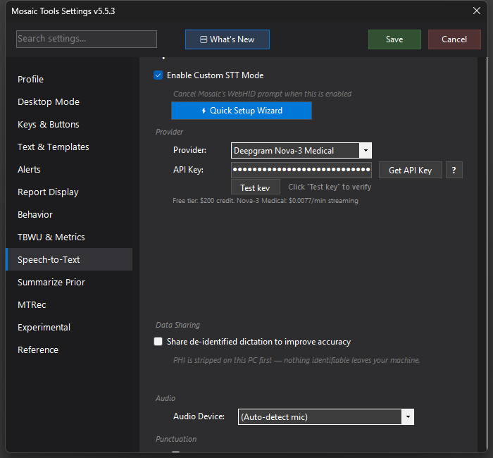

Speech Engines (Providers)
The roster of speech engines MosaicTools can run — all cloud engines are paid on your own account; medASR is free and runs locally on your workstation.

What it does
MosaicTools speaks to a dozen speech-recognition engines through one interface, so any of them can be your driver, a voting secondary, or a failover backup. The current roster:
- Deepgram Nova-3 Medical — the recommended driver; medical-tuned streaming (~$0.0077/min, free starter credit)
- AssemblyAI U3 Pro — medical-domain streaming with large keyterm support
- Speechmatics Medical — streaming, US/EU regions
- Soniox (streaming) and Soniox v5 Async (batch, same key)
- OpenAI Realtime Whisper (streaming, ~$0.017/min) and gpt-4o-transcribe (batch back-fill)
- Mistral Voxtral (batch)
- Google Chirp 3 — needs a Google Cloud service-account JSON
- Microsoft MAI-Transcribe — needs an Azure AI Foundry resource key + endpoint
- Corti Symphony — OAuth client credentials; enterprise/contract billing
- ElevenLabs Scribe v2 — single key; watch for paid monthly plans
- Amazon Transcribe Medical — AWS IAM credentials (~$0.075/min)
- MedASR — free, runs entirely on your workstation; downloads itself the first time you select it
How to turn it on / set it up
Pick an engine under Settings → Speech-to-Text → Provider and enter its credentials (Get API Key opens the right signup page; Test key validates without sending audio). The Quick Setup Wizard does all of this for you, engine by engine.
Tips & gotchas
- Every cloud engine is paid, on your own account — mostly pay-per-use, so an idle key costs nothing. Exceptions: ElevenLabs sells monthly plans and Corti is contract-billed; cancel those if unused.
- medASR is excellent on a wired microphone but degrades badly on Bluetooth headsets — keep it wired or drop it.
- The multi-field engines (Chirp, MAI) have a "Copy AI setup prompt" button — paste it into an AI assistant for guided account setup.